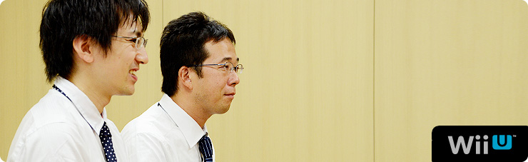
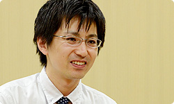

<div class="l-category-local-header">
<div class="category-local-header">
<div class="category-local-heading"><span>社長が訊く</span>
<div class="category-local-sub">IWATA ASKS


<div class="l-soft-topic-path is-block">
<div class="l-soft-topic-path-inner">
<div class="soft-topic-path">
<ul class="topic-path"><li class="topic-path-item"><span>『Wii U』 インターネットブラウザー篇</span></li></ul>


<div id="page-container">
<header class="interviewheader">
<h2 class="interviewheader__ttl"><span class="subtext">社長が訊く</span>『Wii U』</h2>

</header>
<div class="tabmenu-container">
<p class="tabmenu__ttl">シリーズ一覧
<ul class="tabmenu__body tabnum12">
<li class="tabmenu__item tab1">本体 篇</li>
<li class="tabmenu__item tab2">Wii U GamePad 篇</li>
<li class="tabmenu__item tab3">Miiverse プロデュース 篇</li>
<li class="tabmenu__item tab4">Miiverse 開発スタッフ 篇</li>
<li class="tabmenu__item tab5">インターネットブラウザー 篇</li>
<li class="tabmenu__item tab6">Wii U Chat 篇</li>
<li class="tabmenu__item tab7">New スーパーマリオブラザーズ U 篇</li>
<li class="tabmenu__item tab8">ZombiU（ゾンビU） 篇</li>
<li class="tabmenu__item tab9">Nintendo×JOYSOUND Wii カラオケ U 篇</li>
<li class="tabmenu__item tab10">Nintendo Land 篇</li>
<li class="tabmenu__item tab11">Nintendo TVii 篇</li>
<li class="tabmenu__item tab12">Wii Street U powered by Google 篇</li>
</ul>

<div class="hero-container">
<div class="hero__img">

<div class="interviewsubheader">
<div class="interviewsubheader__ttl"><h2>インターネットブラウザー篇</h2>

<div class="pageindex-container">
<p class="pageindex__ttl">目次
<ul class="pageindex__body">
<li class="pageindex__item">1. 「隠すことが強みになる」</li>
<li class="pageindex__item">2. 手元でさわって、大画面で大きく</li>
<li class="pageindex__item active">3. テレビ＋ブラウザーの決定打に</li>
</ul>

<div class="interview-container">
<h3 class="interview__ttl">3. テレビ＋ブラウザーの決定打に</h3>

岩田
: この機会に訊いておきたいんですが、<br>わたしの中でブラウザーのテストって、<br>面倒でたいへんそうなイメージがあるんです。<br>いったいどのようなテストをしているんですか？


佐々木
: 世に数多（あまた）あるサイトをひとつずつ巡回して、<br>表示くずれなど不具合がないか、<br>延々とチェックしています。


岩田
: えーと、普通ＰＣのブラウザーですと、<br>まずパブリックβ（※16）などを一般公開して、<br>「不具合があったらご報告ください」みたいな<br>やりかたをするケースが多いじゃないですか。<br>でもゲーム機はそういうやりかたはできないですよね。<br>世の中にウェブサイトって、それこそ<br>星の数ほどあると思うんですけど・・・。

※16パブリックβ＝一般向けに開発途上のベータ版を公開し、試用に協力してもらうこと。


津田
: そういう意味では今回、<br>3DSのブラウザーでの経験が<br>有効に使われてはいるんですが、<br>佐々木さんと話して、それでもやっぱり、<br>「最低限６か月間以上はやろう」と決めました。


岩田
: ６か月間ずっとテストしまくるわけですか？<br>でもその間に、<br>サイト側の仕様が変わったりしますよね？


津田
: はい、ウェブサイトは、見た目は同じでも<br>じつはサーバー側で毎日のように<br>変更が加えられているサイトもあります。<br>とくに人気のサイトであるほどその傾向は高いんです。<br>本来ならば、HTMLは標準規格ですから、<br>規格に忠実であれば問題が起きることはないはずなんですが、<br>現実はそうじゃないんです。<br>ブラウザーごとにHTMLの仕様の解釈が異なっていたり、<br>規格が確定する前段階の技術を使って<br>さまざまなウェブサイトがつくられていたりするんです。<br>そこはいたちごっこなんですが、<br>地道に繰り返し検証してきました。


岩田
: なんだかそういったお話を訊くと、<br>人力のかたまりみたいな気がするんですけど（笑）。


佐々木
: はい、まったくご想像のとおりです（笑）。<br>ピーク時は３０人以上で、<br>５０００サイト以上をテストしてきました。<br>もちろんできるかぎり機械化はしているんですが、<br>いろんなサイトに対応するためには<br>限界がありますので・・・。


岩田
: 巡回してエラーが出ないかチェックするだけなら<br>機械化できますけど、<br>それ以外のことはできないですよね。


佐々木
: そうなんです。<br>ちなみに、エラーを確認するのも人力です。<br>実際にテスターさんの目で<br>一つひとつウェブサイトを巡回していただき、<br>一般のブラウザーと比較して問題がないかを<br>確認していただきました。<br>やっぱり、インターネットブラウザーとして<br>最終的にお客さんに安心して使ってもらうためには、<br>少なくとも６か月はみっちりチェックして、<br>できるかぎり安定度とセキュリティーを高める必要があるので、<br>そこは努力しています。


岩田
: わかりました。あと最後に何か、おふたりから<br>アピールしておきたいポイントはありますか？


津田
: では、わたしのほうから。<br>今回はタッチスクリーンが大きいので、<br>タッチスクリーンをメインの操作対象と考えています。<br>多くの方がタッチ操作でほとんどすべての機能が<br>簡単に使えるようになっています。<br>その一方で、十字ボタンなどのボタン類は<br>従来からのゲーム操作に慣れている方だけでなく<br>そうではない方でも、<br>このブラウザーを使い続けることで<br>徐々に快適に操作できるものにしたい、<br>という考えがありました。


岩田
: 十字ボタンやほかのボタンは<br>どういう操作を割り当てているんですか？


津田
: ゲームソフトと同じような操作感覚で使えるように、<br>十字ボタンではフォーカス移動、<br>スティックでページ全体の移動や拡大縮小、<br>Ａボタンで決定を割り当てています。<br>&nbsp;<br>おそらく本体機能のアプリケーションで<br>ボタンにこんなに機能をたくさん割り当てているものは<br>ブラウザーだけだと思います。<br>たとえば、Ｌスティックの押し込みで<br>ツールバーなどが非表示になり、<br>ウェブページを広く表示できます。


岩田
: 使えば使うほどいろいろな発見をする感じですかね？


津田
: はい、はじめての人から、熟練の方まで快適に楽しめる、<br>間口が広く、奥も深いアプリケーションになったと思います。<br>さらに今回はWii U独自のJavaScript拡張によって、<br>JavaScriptのプログラムから、<br>Wii U GamePadの各種ボタンやジャイロセンサーなどを<br>ウェブサイト側で検知できます。


岩田
: つまり、サイト制作者の方が自由に、<br>Wii U GamePadならではの<br>いろいろな入力を反映するサイトが<br>つくれるということですね。


津田
: そうです。対応することで<br>操作性がぐんとあがりますので、<br>それを各サイトの方に知ってもらって、<br>ご活用いただけたらと思っています。


岩田
: サイト制作者の方の工夫ひとつで、<br>おもしろいものができるかもしれませんね。


津田
: 社内的にもいくつか実験しているんですが、<br>たとえば地図のサイトなどでは、<br>アナログスティックの操作で<br>地図のズームイン、ズームアウトなどに対応すると、<br>とても快適に操作できます。<br>従来のマウス操作やタッチスクリーンとは<br>またぜんぜんちがうスタイルなので、<br>「新しいなぁ」と思いました。




岩田
: なるほど。<br>スマートフォンが普及して<br>対応した専用サイトがたくさんできたように、<br>Wii Uからのアクセスが増えたら、<br>そういったサイトも増やしていただけるかもしれませんね。


津田
: はい。「増えていってほしいな」と思います。<br>あと、任天堂らしさという意味では、<br>Wii U GamePadの画面の左下にMiiが表示されています。<br>このMiiにはいろいろな意味があるんです。


岩田
: 今回、Wii Uでは<br>複数のユーザーアカウントを持つことができますから、<br>いま使っているユーザーのMiiが表示されるんですよね？


津田
: はい、さらに、<br>ウェブページを読み込んでいる最中は首を振ったり、<br>ロード時間が長いと寝てしまうこともあり、<br>使い手の気持ちを代弁してくれるようにしました。<br>また、ブラウザーのさまざまな隠れた機能を<br>時々教えてくれたりもします。<br>あと、このMiiをよく見ていただくとわかるのですが、<br>本を持っているんです。<br>Miiをタッチすることで、ブックマークが開きます。<br>ブックマークも本当の本のようなデザインになっていますから、<br>自分の好きなウェブサイトを<br>楽しみながらコレクションしてほしいです。


岩田
: 佐々木さんからは、何かありますか？


佐々木
: あと今日お話ししきれなかったんですが、<br>同じグループのデザイナーさんや技術サポートメンバーに加え<br>今回はビデオプレーヤーを<br>Nintendo European Research and Development SAS（仏）<br>（NERD）（※17）さん、<br>WebKitの中のJavaScriptのJIT（※18）は<br>Nintendo Software Technology（NST）（※19）さんに<br>ご提供いただきまして、本当に多くの方のお力添えのおかげで、<br>新しいブラウザーが実現できたと思っています。

※17Nintendo European Research and Development SAS（仏）（NERD）＝フランスのパリにある任天堂の開発子会社。
※18JavaScriptのJIT＝JavaScriptのプログラムを高速に実行するための技術。
※19Nintendo Software Technology（NST）＝アメリカのワシントン州にある任天堂の開発子会社。


岩田
: NERDさんには<br>動画再生技術に経験豊富な技術者が在籍しているので、<br>動画再生まわりのいろいろな問題を解決するのに、<br>とても助けられましたよね。<br>あと、そういえば、JavaScriptのJITは、<br>別のプロジェクトでつくられていたものを、<br>開発中盤になって、もらってきたんでしたね（笑）。<br>でもやっぱり、ブラウザーって、<br>つくるのはとてもたいへんだけど、続けていくことで<br>ずいぶんいろいろできるようになるものなんですね。<br>今回、それをすごく感じました。


佐々木
: そうですね。<br>本当になんというか、深いです。<br>応用範囲の広い技術で、やればやるほど<br>「そういった技能は上がっていくものだ」と思います。<br>任天堂としてはDSから数えると<br>５つめのブラウザーになりますが、<br>ぜひ多くのお客さんにさわっていただきたいです。


岩田
: いろんな方にぜひ、<br>ゲーム機であることを忘れるくらい普通に使える快適さを<br>体験してもらって、さらに<br>「インターネットブラウズは<br>　エンターテインメントになりえる」ということを、<br>このブラウザーで証明したいですね。<br>おふたりとも、今日はありがとうございました。


佐々木・津田
: ありがとうございました。


<li class="pagination-prev"><span>2. 手元でさわって、大画面で大きく</span></li>
<li class="pagination-next"><span>→ Wii U Chat 篇</span></li>
</ul>
<div class="listbtn-container">
<p class="listbtn__item">社長が訊く 一覧

